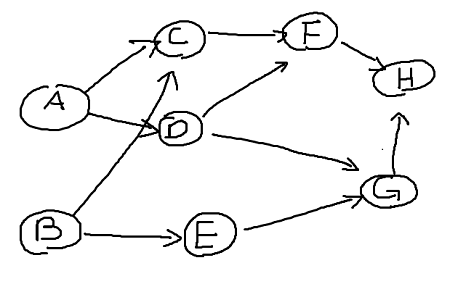
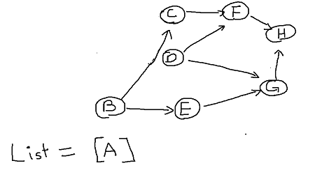
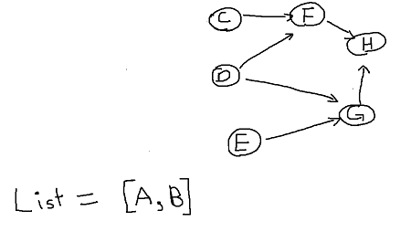
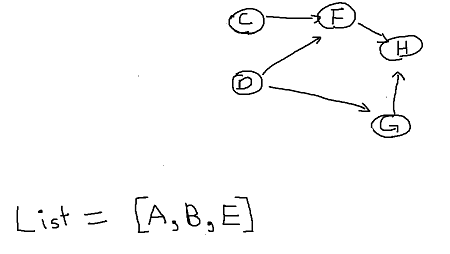
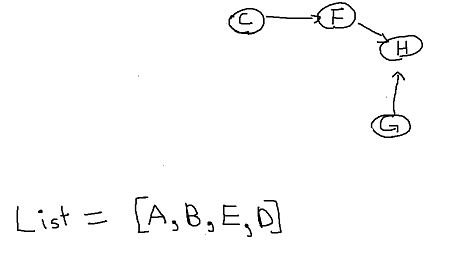
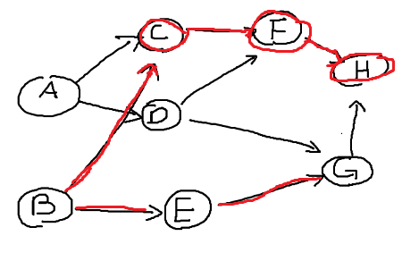
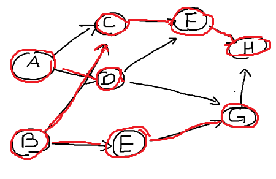

Topological Sort:
date posted: 2020-02-09
Contents
Topological sort
By definition topological sort is linear ordering of vertices such that for every directed edge (u,v), vertex u must come before v in the ordering.
Topological sort has lots of applications in real world, some of them are build systems, advanced-packaging tools, task scheduling, pre-requisite problems and anything that need an ordering where previous jobs must be done to move on.
One common analogy could be getting ready to go outside. A person needs to 1. take a shower 2. put on underwear 3. pants and so on... This is an example of topological sort where each activity such as shower, underwear, pants can be thought of as a vertex and edge that allow the person to go from shower then underwear. Topological sort is used to order activities that need specific execution order.
Before moving on to an example note that topological sort only works when graph is directed acyclic graph (DAG). It is very intuitive, if you would have a cycle then you would be stuck taking shower -> putting on underwear -> shower on and on thus it wouldn't be possible.
Now we know what topological sort is, lets talk about how it is done. There are two different methods of performing topological sort.
Lists method
Topological sort using a list follows simple 3 steps:
- Create a list for storing vertices
- Find vertex with 0 in-degree(no incoming edge) then insert into list. Delete inserted vertex from graph and its edges(out-going edge since we pick vertex with no incoming edge).
- Repeat step 2 for all vertex until no more vertex is left in a graph.
Pretty simple right? Lets clarify our understanding by going over simple example.
Below graph is directed and has no cycles therefore lets perfrom topological sort!
There are two vertex that have 0 in-degree. Doesn't matter which one we choose first so let's just go on and pick vertex A. Delete vertex and edges and insert vertex into a list.
Now vertex B and D have 0 in-degree, this time let's pick B.
Next lets choose Vertex E.
Choose D.
You get the point... Now I will choose G, C, F, lastly H giving us list = [A, B, E, D, G, C, F, H]. Now we are done! If you check the list we've just created they are ordered so that for every directed edge (u,v) vertex u comes before v in the ordering.
Depth First Search methods
For those of you needing quick recap on what DFS is, check out Depth/Breadth First Search before moving on.
Assuming you know exactly what DFS is lets use it to perform topological sort. Similar to using list method there are 3 simple steps:
- Create a list
- Perform DFS on vertex with no incoming edge, while performing DFS if you reach vertex with no adjacent vertex, insert that vertex into list and mark it as "visited"
- Repeat step 2 until no more vertex to visit.
Let's go through an example to understand more deeply.
I will use same example as before however I will choose vertex B first and perform DFS.
B - C - F - H since H has no adjacency vertex, not G because vertex G and H has path (G,H).
Insert H into our list and mark H as visited.

Now going backwards we visit vertex F. Its only adjacency vertex is H however it is "visited" therefore it has same as having no adjacency vertex. Insert vertex F into our list and mark it "visited". Do the same for vertex C, now we are at vertex B. It has two adjacency vertex C and E but since C is visited lets move down B - E - G.
Vertex G has one adjacency vertex H, it has been visited already so insert G into our list. Moving back to vertex E it has adjacency vertex G but has been visited so insert E into our list. We are back to vertex B which had two adjacency vertices but both are visited therefore insert B into our list.

We have list = [H, F, C, G, E, B] so far.
Repeating step 2 only unvisited vertex with no incoming edge is vertex B. There are two paths but only unvisited path is A - D moving down its path we stop at vertex D since its adjacency vertices are visted therefore insert D into our list. Finally insert vertex A into our list. As you can see now we have visited all vertices and left with list = [H, F, C, G, E, B, D, A].
 NOTE: since list is in reverse order, reverse it.
Finally reversted_list = [A, D, B, E, G, C, F, H] correctly sorted all vertices so that
for every directed edge (u,v) vertex u comes first in the list.
Some people probably realized that two different method output different ordering. It is not because
of difference in methods however topological sort can have multiple sorting order.
In our case we could've started with vertex A or B which will give two different sorted list.